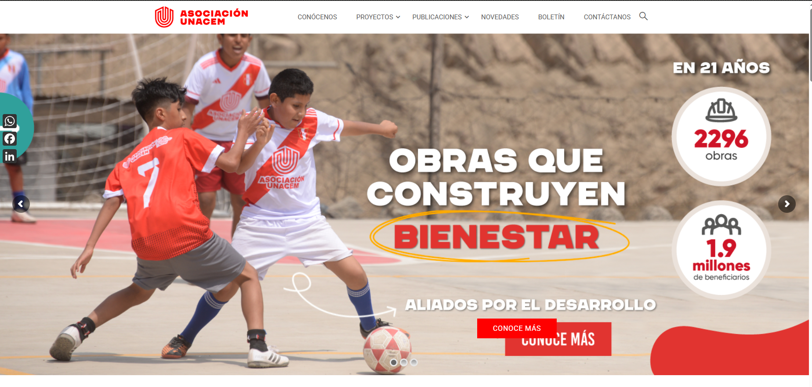

Asociación UNACEM – Plataforma de Gestión y CMS
Contexto
La Asociación UNACEM buscaba modernizar su plataforma digital para mejorar la gestión interna de formularios, documentación y procesos administrativos. El objetivo principal fue desarrollar un sistema que permita a los colaboradores registrar información, adjuntar documentos, firmar digitalmente y facilitar la revisión desde un panel administrativo centralizado.
Previamente, estos procesos se realizaban de manera manual o no estructurada, lo cual generaba demoras, falta de trazabilidad y dificultad en la gestión de documentación oficial.
Solución Implementada
Se desarrolló una plataforma CMS a medida con frontend responsivo y backend modular en Laravel, permitiendo gestionar formularios, usuarios, archivos y flujos administrativos de manera eficiente.
Front Office
- Registro completo de formularios dinámicos.
- Adjuntar archivos y documentos requeridos.
- Sistema de firma digital dibujada mediante canvas.
- Validaciones automáticas según tipo de formulario.
Back Office
- Gestión completa de formularios enviados.
- Visualización y descarga de archivos adjuntos.
- Gestión de usuarios y roles administrativos.
- Panel seguro con autenticación y permisos.
Tecnologías y Arquitectura
- PHP – Framework Laravel
- Base de datos MySQL
- Bootstrap para maquetación responsiva
- JavaScript + Canvas para captura de firmas
- Despliegue en VPS Linux (Ubuntu)
- Infraestructura: 1 servidor web + 1 servidor de base de datos
Resultados Clave
- Digitalización completa del proceso de registro y recepción de formularios.
- Ahorro significativo de tiempo para colaboradores y administración.
- Mayor orden documental gracias a la gestión centralizada.
- Reducción de errores y pérdidas de información.
- Portal adaptable y escalable para futuras ampliaciones.
Mockups del Proyecto
Imágenes referenciales del front office, back office y módulos administrativos.